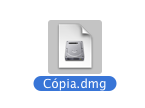
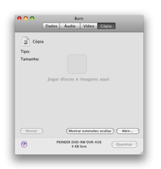
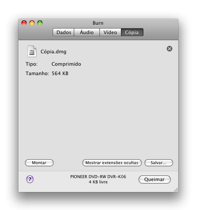
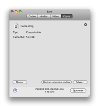

Copiando Discos:
Burn
pode usar imagens de disco. Estes são arquivos que representam
um disco. Burn suporta. Você pode também copiar um disco
existente.
Nota: Disco Multisessão não podem ser
copiados, com exceção de discos Audio CD (mas eles
não são cópias exatas).
No Panther somente cdr, toast, iso e arquivos cue/bin bem
básicos podem ser gravados. Outras imagens podem ser usadas se
montadas e jogando elas na lista.
1 Selecione um disco (imagem)
Selecione uma imagem de disco que você quer gravar em um disco.

2 Jogar a imagem ou
disco na janela
Jogue a imagem de disco (dmg, img, toast, iso, cdr, dvdr, cue/bin e
TOC) ou disco na janela principal do Burn.
 

3 Clicar em Queimar
Isso irá mostrar uma janela.

4 Selecionar
opções
Selecione opções para a sessão de
gravação. Para mais ajustes, veja as Preferências
sob o menu Burn.

5 Gravar o disco
Agora clique Queimar para gravar o disco.

6 Burn
vai gravar o disco
Enquanto grava o Burn irá mostrar uma janela com o estado da
gravação.